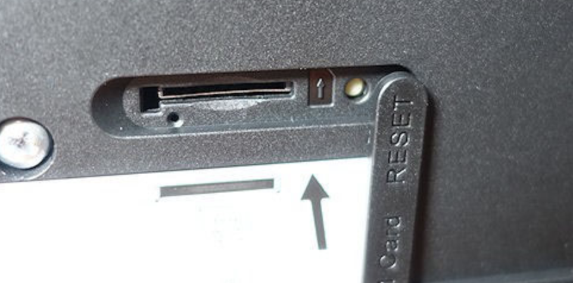

Ich habe seit ein paar Stunden das Problem, dass das Woan aktiv ist, jedoch die Internetverbindung unterbrochen ist, sobald ich was googeln will, kommt eine Meldung, dass die Verbindung nicht sicher ist und ich werde auf die 192.168.81 Magenta Seite da umgeleitet, wo woan status an ist, jedoch steht Unterbrochen da... kann mir jemand helfen?
Michael Liendl
Hallo Nofe,
was hast Du denn schon alles probiert? Neustart, Reset?
Beziehst Du Dein Internet über Kabel, DSL od. LTE?
Liebe Grüße
Michael
Bearbeitet
von Michael Liendl
Nofe Darhuber
Danke für deine Antwort!
ja hab ich beides schon probiert!
Ich beziehs über einen wlan router, der am strom angeschlossen ist, nennt sich glaub ich mobile broadband. Habe kein lan kabel oder so!
lg
ps: so sieht das aus
Bearbeitet
von Nofe Darhuber
Michael Liendl
Guten Abend!
Probier bitte mal Folgendes:
Navigiere zum Punkt
Einstellungen - Verbindungsaufbau - Profilverwaltung
Neues Profil
Profilname: wurscht
Benutzer:
t-mobile
Passwort:
tm
APN:
business.gprsinternet
Dann auf speichern und dieses Profil übernehmen. (ggf. istt danach noch ein Neustart notwendig)
Liebe Grüße
Michael
Nofe Darhuber
Danke michael, leider funktioniert das auch nicht
lg
Michael Liendl
Hallo nochmal!
Ich würde vorschlagen, dass wir das Modem auf die Werkseinstellungen zurücksetzen:
Neben dem SIM-Karteneinschub findest du die kleine weiße Reset-Taste.

Bei eingeschaltenem Gerät bitte mit einem spitzen Gegenstand ungefähr 3 Sekunden drücken, bis die Betriebsanzeige zu blinken beginnt.
Wenn das auch nicht funktioniert, müsstest Du das Gerät tauschen.
Liebe Grüße
Michael
Christian_E
Am 23.6.2020 um 19:45 schrieb Nofe Darhuber:
Danke für deine Antwort!
ja hab ich beides schon probiert!
Ich beziehs über einen wlan router, der am strom angeschlossen ist, nennt sich glaub ich mobile broadband. Habe kein lan kabel oder so!
lg
ps: so sieht das aus
Gibt es bei dir tatsächlich kein LTE?
Weil am Bild du offenbar im 3G Netz eingewählt bist.